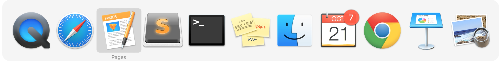
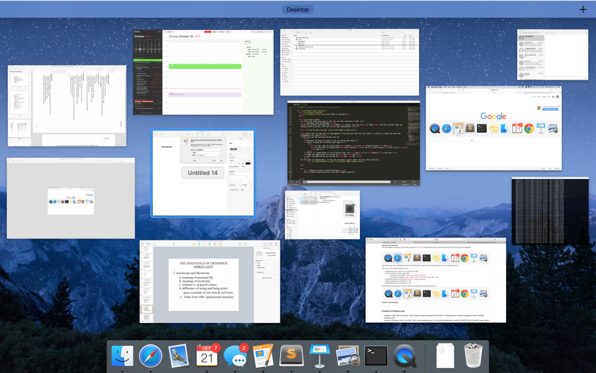

Typical Appearance
The task switcher can come in many forms, and is very dependent on the system, but there are three main appearances which exist on modern desktop OS’s . The first, and most important, is the task bar, or tray. This is a list of pictures of each application, which is always on the bottom or side or the screen. Each picture can be clicked on to toggle that task being opened or hidden, and often users can alternate click on the tasks to open up a menu with additional options, including ending tasks. The second common appearance is a feature that portrays all currently open programs (or their respective icons) in thumbnails across the screen. They typically prioritize the screen, displaying themselves in front of any and all open windows. Please click here to see examples on different operating systems. Most systems also have a third window that gives more technical information on tasks. This is called Task Manager on Windows and Activity Monitor on Mac. This window can usually be opened with a keyboard shortcut and gives performance and resource usage information on individual tasks. Tasks can be terminated from this window, including tasks that are not responding and cannot be closed normally. Please click here to see examples on different operating systems.
Example of a desktop task switcher (Windows 10)

Typical Behavior
A fairly common way to use the task switcher is through a hot key that would bring up all the applications that are currently running. The specifics of this vary by system, but the hotkey is often good for switching between two Windows, or other tasks using the keyboard only and not the mouse. After using the hot key, you simply click on which application you would like to switch to. An example of this would be pressing ALT+Tab in windows, which would bring up the apps in that grid like structure that is shown on the Windows 10 example in the “Typical Appearance” section. In the older versions of iOS, double tapping the home button would reveal a task bar on the bottom of the screen. In the more recent versions of iOS, double tapping the home button would reveal the applications in a single row where you can swipe left and right to see which applications are running. From there, you would simply tap which application you would want to switch to. Below is a video showing off the task switcher in OSX. The taskbar pops up, taking priority of the screen, and the user can navigate to the left or to the right, quit tasks, hide them, or quickly "alt/tab" back and forth between a pair of tasks.
Component In Action
Below is a video showing off the task switcher in OSX. The taskbar pops up, taking priority of the screen, and the user can navigate to the left or to the right, quit tasks, hide them, or quickly "alt/tab" back and forth between a pair of tasks.Events
There are only a few simple events when talking about Task Switcher. The most relevant, basic task launcher event is to select the new open app and switch to it. Because switching between applications is a fairly simple action that is heavily used, it should not require the user to perform many steps. First of all, the task switcher is either onscreen or offscreen. If a user hovers over a task, it becomes selected. The previous task then becomes unselected since only one task can be selected at a time hence task switcher.
Variants
Switching tasks is a standard operation on most devices. Below is a list illustrating the broad ways to accomplish task switching:
- Mission Control, an OSX variant, displays all open windows in thumbnail view across the screen. The difference is that there are no shortcuts to navigate between currently open windows, and you get a preview of the conent of each open task, rather than just the task icon. They are not aligned neatly across the middle of the screen, but scattered. A user can click on any task to switch to it. Also Mac OS has a desktop switcher, which can switch between multiple virtual populated desktops, instead of individual tasks. More information can be found in Platform-Specific Instances.
- Most smartphones have a task switcher. When launched, gesture-based controls allows the user to cycle through all open apps, and when they find the one they want to open, they tap on it to open it. Also it is important to mention that task switchers on mobile OS’s are very different for each platform, and do not look the same as on desktops.
- Using Voice Navigation (i.e. Siri) and vocally ask to "open" a specific task.
Priority Metrics
Its main function of switching tasks should be intuitive. Once the task switcher is active, there should be no confusion and no series of extra steps to accomplish switching to a different task. While switching tasks is relatively straightforward, the task switcher hotkey is more difficult to learn. Firstly, the user may not even know that this method exists, and if he/she does, must first discover the hotkey. Even then it takes a bit to get used to the single button control, and the user will likely take a few tries to switch the wanted task. The task manager is a bit more complicated as it shows more detailed statistics and information, which the user may not understand. There is also the same issue of finding how to get to the task switcher in the first place. However, the most common use of the task manager, force ending a task, is fairly easy to learn, as there is usually an obvious button. Learnability is important, but assuming a user will be using any given OS multiple times, learnability is only an issue at the outset and is not as important as efficiency, which will always be a concern.
All three versions of task switchers should be very efficient. There are little to no intermediate states between the user and his/her goal. That being said, each of the three versions is more efficient for different things. The task bar is the generally most efficient as it is always on screen (if not auto-hidden) and shows all tasks in one view. The hotkey is most efficient for switching back and forth between two tasks, and is also the best solution to switching out of a full screen application, where the taskbar is hidden. The task manager is not very efficient at switching tasks, neither is it the most efficient at closing tasks, because it takes time to come up and navigate to the wanted task, however it is the most powerful, and must be used when the other methods are not working. Because the task switcher is so often used, efficiency is the most important metric.
The taskbar should have few errors, as it is fairly simple. However, users could often accidentally open a pinned task by misclicking, or accidentally close or switch away from a task they want open. The hot key has the error or hitting the key too many or few times, and therefore switching to the wrong task. The task manager takes more effort to open and I cannot think of any regularly occurring errors. Errors are definitely a concern for any given task switcher. Each common error is a decrease in overall productivity.
Memorability would be the biggest hurdle, as users need to memorize the input to launch it. Once that one input is memorized, there should not be any confusion on what to do next. All three versions of the task switcher should be easy to remember. They are all fairly simple mechanisms, and they always function the same no matter what or how many tasks are open.
If any usability metric is least important for a task switcher, it is probably satisfaction. The action of switching a task speaks for itself and there is little need for feedback other than to do its job quickly and efficiently. The user should feel that switching tasks is effortless, and feel a sense of "flow" as they are hopping between tasks. If the other metrics are satisfied for any given task switcher, satisfaction will follow.
Key Characteristics
I think the most important IxD principles every task switcher should adopt are Efficiency, Feedback, and Simplicity.
Efficiency – A good task switcher should prioritize efficiency and should be accessible from any screen or application. It should have the ability to switch between, or kill tasks in 1 or 2 steps since task switching is a heavily used action. Common task switcher features include representations of the running tasks, icons for example, and a button to quit them. The user should be able to switch to any given task with as few clicks as possible, and the switching action should be a quick process without any unnecessary transitions or animations. Switching tasks should be a simple, easy to learn task, and should function the same regardless of how many or what type of tasks are active.
Feedback – Feedback is a very important IxD principle that a task switcher must adopt. Users should never be doubtful of these two scenarios: 1: a current task is highlighted, and ready to be opened on key release 2: all other tasks are not selected, so as there is no confusion as to which task will be opened Should these scenarios be inconsistent and the task switcher deems unreliable, the user will require much more time when attempting to switch tasks due to uncertainty in his interface’s function.
Simplicity – Simplicity is also an important IxD principle to implement in task switcher. Users should have zero problems distinguishing which tasks are active, which task is currently selected, how to select a different task, and how to quit a running task.
State Diagram

Task switcher states depend on the functionality of the switcher, but as a general overview we can say that there a few different states. Task not-running, Task running & active, Task running & non-active, and Task selected in task switcher, Task options panel selected in task switcher. It is important to note that, in the taskbar or tray, tasks which are not currently running can still be pinned, and selected, opened, or shown options.
Credits
Written by Flanders Lorton 2015. Embedded video is original content.
A Task Switcher allows for quick and efficient switching between open programs for a streamlined workflow. There are a plethora of different ways to accomplish this, ranging from quick keyboard shortcuts, to using the command line.
Events
The most relevant task launcher event is to select the new open app and switch to it. Because of the simplicity of the action, there should not be a myriad of alternative actions. If a user hovers over a task, it simply becomes selected, and the previous task becomes unselected. Only one task can be selected at a time.
State Diagram

Note that only one task can be selected at a time, so when one task is selected all the others are not. A task must be selected in order fo it to be launched, which occurs on key release or it's platform-specific way of selection. However, if the task switcher is active on the screen, a user can always interact with each task, and they are never disabled if the task launcher is open. Please see Platform-Specific Instances for more states.
Key Characteristics
This section is for describing “what makes for a good your component here?” Most likely, this is an amalgam of guidelines documents and platform-independent interaction design principles.
Feedback
Perhaps the most important interaction design principle that a task launcher must follow is feedback. Users must never doubt whether:
- a current task is highlighted, and ready to be opened on key release.
- all other tasks are clearly not selected, so as there is no confusion as to which task will be opened.
Simplicity
Simplicity is a key guideline to implement properly. Upon the task switcher's launch, the user should have no trouble distinguishing which tasks are open, which task is currently selected, what the next selected task would be, and how to open the next selected task.
Platform-Specific Instances
Below are some examples of platform-specific instances.

Ubuntu 11 Task Switcher
Windows 8 Task Switcher
Windows 7 Task Switcher

KDE 4.1 Task Switcher

OS X Mountain Lion Task Switcher
Below are the sections of platform-specific instances.
Platform-Specific Instances
Windows 8.1
The three versions of the task switcher that I have mentioned are present on Windows 8.1. There is also a “Switch list” feature as part of Windows 8’s “Hot Corners” but I will not be covering that as it is horrible and I have it disabled. I will cover the other three in specific detail.
The taskbar is pretty standard; apps can be pinned for quick access, and can be opened, closed and switched at ease. Hovering over an app opens a live preview of it above the taskbar. Hovering over the preview brings up a full size preview of the window or app. Apps have an options menu accessed by right clicking on them and the taskbar itself also has its own options menu accessed by right clicking on a blank spot. There is also the Windows logo in the corner which opens the start menu, and on the other side of the task bar is a clock with the date, and also a notification area, where system settings, such as wifi, sound levels, and power settings, can be accessed along with hidden apps such as graphics settings, and apps which do not appear on the main taskbar, but are docked, and still running.
The Microsoft windows dev guidelines state "The taskbar is the access point for programs displayed on the desktop. With the new Windows 7 taskbar features, users can give commands, access resources, and view program status directly from the taskbar. The taskbar is the access point for programs displayed on the desktop, even if the program is minimized. Such programs are said to have desktop presence. With the taskbar, users can view the open primary windows and certain secondary windows on the desktop and can quickly switch between them."

The hotkey in Windows 8.1 is alt+tab. This opens a temporary interface where lives preview screens of the apps are visible including window titles. Pressing alt+tab once will switch back and forth between the most recent opened app. Apps can be cycled through by each press of tab while holding alt, if held on one app, the the window will open in a full scale preview. Once the user lets go of alt, the selected app is switched to.

The task manager in Windows 8.1 can be accessed by selecting it from a menu accessed through the hotkey ctrl+alt+del. It can also be accessed through a menu option by right clicking on the taskbar. Although it was available in previous versions of Windows, task switching is not a main function of the task manager in Windows 8.1. It is primarily for ending tasks and obtaining application and system performance information.

OSX El Capitan
There are two main ways a user can use task switching in OSX.
Standard Task SwitchingThe user presses and holds the CMD button, and taps on Tab. The task switcher pops up, taking screen priority, showing all currently open apps with the current app being highlighted:

Note that the app that is highlighted is the only one that has text under it, and has a light grey box that encompasses the icon
The user now has multiple options and can
- Release the keys to switch to the currently open app.
- Cycle through the currently open apps:
- to the right by using either
Tabor theRight Arrowkey. - to the left by using either
Tab + Shiftor theLeft Arrowkey or the`key. - Enter Expose Mode by hitting either the
UporDownarrow key. - Hide the application by hitting the
Hkey. - Quit the application by hitting the
Qkey.
Although there are many shortcuts to accomplish multiple tasks, for the sake of simply "task switching" only the first three bullet points are relevant. For the sake of completeness, if the user decided to cycle right, the new state would be
Mission Control Task Switching
The user either presses the mission control key , enters Control + Up keys, enables swiping gestures (ie four finger swipe up across the trackpad), or presses the up or down arrow keys when the standardk task switcher is active, and launches Mission Control and is greeted with the following view:

Although there are many neat features in Mission control that have to do with using OSX Spaces , regarding the act of task switching, they are irrelevant as it is more for window management. What is to note is the differences between the two interfaces. Mission Control displays thumbnails where a user can see what is going on inside each and every single app. They are spread across in no particular order, and none of them are highlighted until a user mouses over an app. When a user mouses over an app, a label appears with the app name. A stark contrast to the thin, simple standard task manager that only shows icons and a single selected app.
iOS
The most common way to switch tasks in iOS is to double tap the home button, which will have all the apps that are currently running appear in a single row. From there, the user can swipe left and right to see which applications they can switch to, then taps on whichever application intended for use. There are a few variants for switching tasks in iOS that include: "Slide Over", "Split View", and "Picture in Picture". They allow the user to switch tasks even quicker on the fly.


Task Switching Through "Slide Over"
While the user is using an application, slide over allows the user to use another application without quitting the original application the user is in. All the user needs to do is swipe from the right side of the screen towards the center of the screen in order to use another application. If the user wants to switch the application that Slide Over pulls up, the user simply swipes down from the top right side of the screen. This will bring up a taskbar that displays all the applications that the user can switch to.

Task Switching Through "Split View"
Split View allows the user to use two apps at once. Using Split View is very similar to using Slide Over. The user would swipe from the right side of the screen towards the center of the screen to enable Slide Over. Remember that in Slide Over, there is an application running in the background while the user is currently using another application. The user then taps the middle of the screen divider, which causes the application running in the background and the application that the user is using to appear side by side. The user can now use both applications at once.

Task Switching Through "Picture in Picture"
Picture in Picture allows the user to watch movies or use FaceTime while using another application. While the user is watching a movie or using FaceTime, they press the home button, which will put the movie or FaceTime into a smaller window and bring the user to the home screen in the background. From there, the user picks whichever application they would like to run. The application they pick will run in the background while the movie or FaceTime continues to run in that smaller window. The user can drag that smaller window to whichever part of the screen they’d like. They can also make the window smaller or bigger.

These are the multiple ways that a user can switch tasks on iOS. To get a better feel for how the variants of task switching in iOS works, there is a video below that demonstrates how each variant works.
iOS Task Switching Variants In Action
Below is a video displaying "Slide Over", "Split View", and "Picture in Picture" in action.
Credits & References
Juell, Thor. "Viewing Your Windows Programs without Seeing Windows." VMware Fusion Blog. VMWare, 10 Nov. 2011. Web. 23 Oct. 2015.
Barton, Seth. "How to Switch Tasks Faster in Windows 10." Expert Reviews. N.p., 25 July 2015. Web. 23 Oct. 2015.
"IOS 9's Redesigned Task Switcher." YouTube, 16 June 2015. Web. 23 Oct. 2015.
OSXDaily. "Secrets of the Command-Tab Mac Application Switcher | OSXDaily." OS X Daily Secrets of the CommandTab Mac Application Switcher. OSXDAILY, 17 Nov. 2009. Web. 23 Oct. 2015.
Apple. "Apple." Use Mission Control on Your Mac. Apple, n.d. Web. 23 Oct. 2015.
"About Multitasking on Your IPhone, IPad, and IPod Touch." Apple Support. N.p., 14 Sept. 2016. Web. 26 Oct. 2016.
https://www.youtube.com/watch?v=jorwzOsPAYs